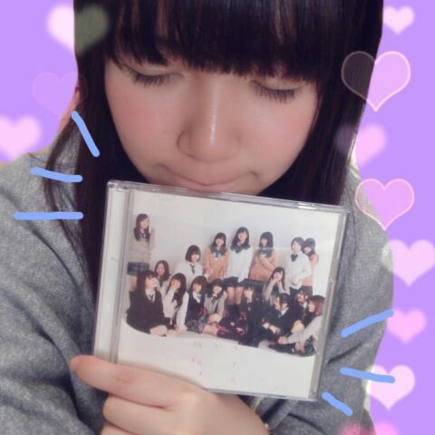

| 2014/04 02 Wed | ひめたん(*>ω<*)そ の428 |

本日「気づいたら片想い」リリース！
制作に携わってくださった
すべての方に感謝です
ありがとうございました(＊^^＊)
そしてお手に取ってくださった
あなたに感謝です
かわいがってあげてねよろしくね♪♪
さらに、なんと光栄なことに
オリコンデイリーチャート1位いただきました！
なんということだー(´nωn`)
本当にありがとうございます
私含め乃木坂ちゃんはみんな幸せ者ですなー
今週末からは握手会も始まるし
今からうきうきしてる！
さてさて、
今回のシングルについて
ちらっと語ろうかなーなんて思ったり。
参加楽曲は
type-C「生まれたままで」
ひめたんの歌ってるパートは
んまあーそうだな
きゅんきゅん王国のみなさんの耳なら
ひめの歌声には非常に肥えてるって信じてるから
ここで答えは言わないよ( ´ ▽ ` )笑
それでもわからんなー
気になって夜は8時間しか眠れないなーって方は
乃木どこスタジオライブが全握で
チェーーーーーーーックしてみてね♪
ちなみに夜は8時間しかってやつは
ほんとにコメント最近こればっかだからね！
だからひめたんがみんなの真似したんだからね
ひめたんが悪いみたいな空気やめてね頼んだよ！！
中の冊子とゆーか歌詞カードは
なかいさんで1ページ飾ってるよ(＊´ω`＊)
なかいさん推し得ってやつね♪♪
そして特典映像のエチュード
ひめたんたちのチームは
type-Aに収録されていると聞きまして。
なんで他人事なのかってゆーと
自分の姿を観るのがイヤで
まだチェックしてないんだよね(´・ω・｀)あほ
ほんっとプロとしてどうかのかしらこのコ。
自分のことが好きじゃないと
こうもなるみたいでほんとに情けない......
でもね頑張りました！
いこたん (生駒里奈ちゃん)
まいまい (深川麻衣ちゃん)
みおちゃん (堀未央奈ちゃん)
わかつき (若月佑美ちゃん)
とひめたんです！ふわふわめんばー揃ったねー
人魚になりました(((o(*゜▽゜*)o)))
さらにレコチョク さんで
着うた&フルサイズ配信スタートしました！


 あのさ。ひめたんはさ、
あのさ。ひめたんはさ、
ショートケーキの......ひゅ〜〜〜〜〜(春一番)
いやー待ってその焦らし方はないわよ
帰ってきてーーーヽ(´・ω・｀ヽ)
乃木坂で美容に詳しいのって誰かな？
これに関してはねー
ほんとにみんな詳しいから
誰って言えないなー。
みんな勉強熱心で研究家だからね
ステキです◎
可愛い可愛いひめたんみたいになれるように、
そして美容のために
半身浴を始めようと思うんだけど、
ひめたんだったら右半身と左半身
どっちにする？
ひめたんはかわいくないけど大事なことよねー
で、えーっと、うん？
右半身と左半身ってまた高度なことを。
右だけ血行よくなるよーってかそれ以前に
物理的に無理だと思うの(´；；｀)
テストの点数が低かったから
処分するために食べたいんだけど、
テスト食べるときのオススメの味はなんですか？
ちなみに世界史です
いや科目とか何でもいいです
食べたいんなら止めないけどさ
おとなしくシュレッダーかけなよー
多分美味しくないし、お腹壊すよー(´・ω・｀)
最近ひめたんの魅力に気づきました！笑
遅いかな？
そんなことないよー
嬉しいーありがとーんふー♪♪
これからなかよくしてねよろしくね！
私は今年から就活なのですが
おこがましいかもしれませんが
ひめたんからやる気の出る
応援メッセージが欲しいです！
おこがましくないです全っ然！
就活生のみなさん応援してます∩^^∩
笑顔でね！自分らしさを大切にしてくださいね。
ひめたんの日記の
コメント欄下２ケタに46を踏んだ方へ
手書きでコメ返するコーナー
＼ ひめたん46 ／

え、ちょっと、みんなみて！
このうさぎさん
上出来だと思わない( ^O^ )？
とゆーことで
いつもたくさんの楽しいコメント
ありがとうございます＊
すでにCDの感想を書いてくださってる方も
たくさんいらっしゃって
読ませていただきましたよーんぬ
がんばって作り上げた作品が
みなさんに届いたんだなーって思うと嬉しくて、
もっと頑張らなきゃ！ってなるのー♪
それから、ウソつきさんあんまいなかったなー
ひめたんは純粋でぴゅあで無垢な少女なので
あんまパンチの効いたウソは
やめてよねー( ^O^ )
かわいいウソなら許したげますよー
そーゆー日だったからねー
(＊´・ω・＊)
コメント(534)
2014/04/02 23:30